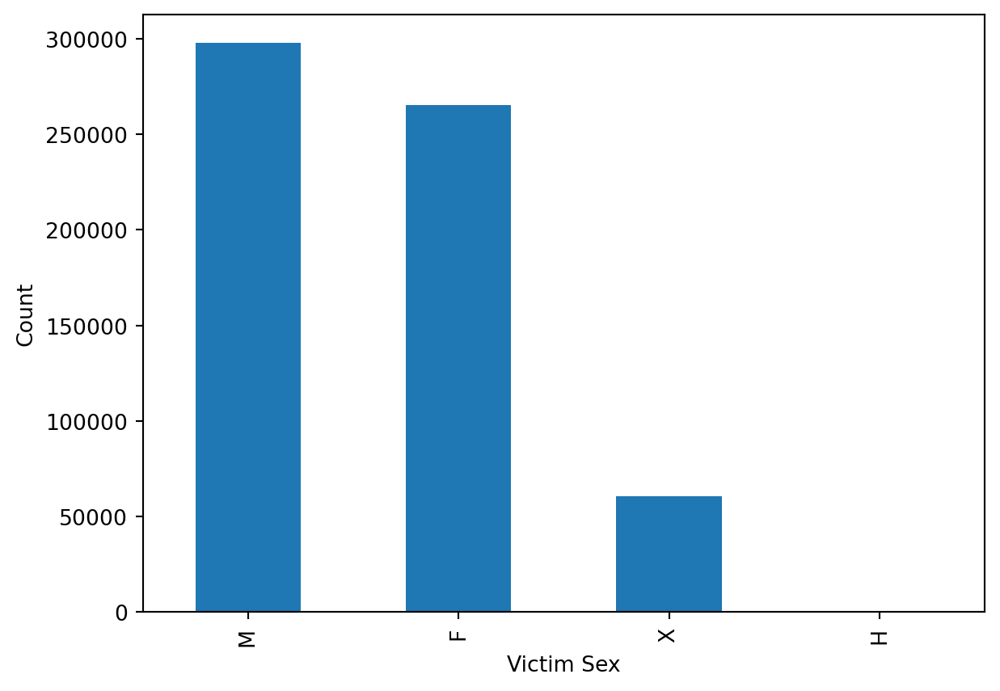
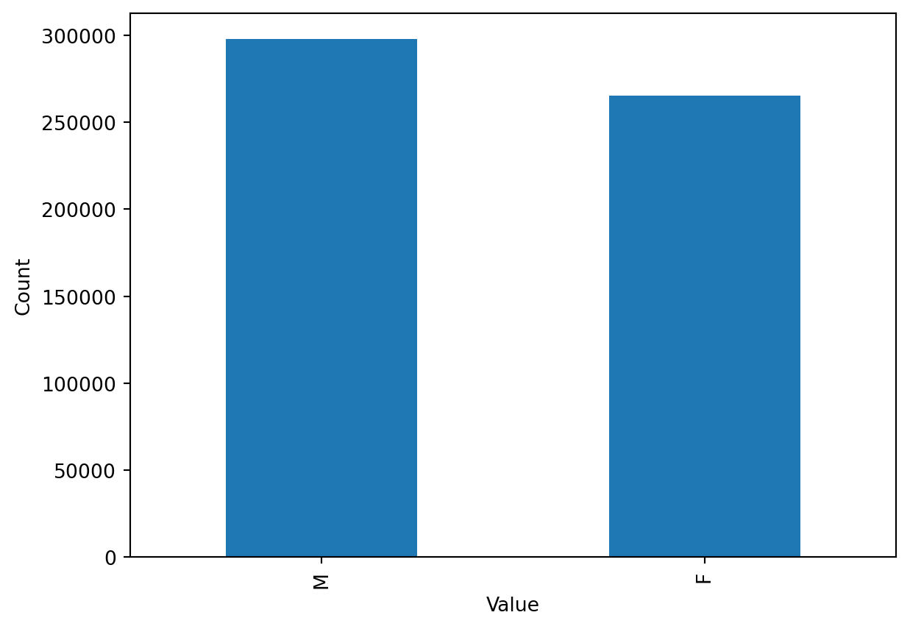
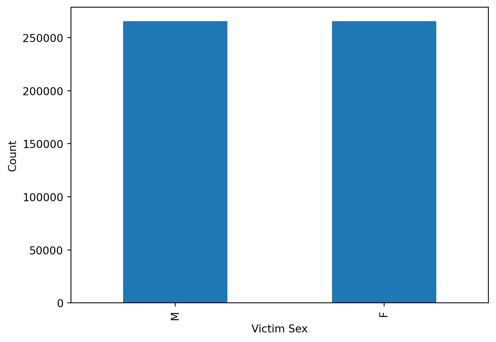

import pandas as pd
from sklearn import preprocessing
from sklearn.model_selection import train_test_split
import matplotlib.pyplot as plt
import numpy as np
from sklearn.linear_model import LogisticRegression
from sklearn import metrics
import time
from sklearn.preprocessing import MinMaxScaler
from sklearn.metrics import f1_score
from scipy.linalg import lu
from scipy.linalg import qr
from scipy.linalg import svd
from sklearn.metrics import accuracy_score
data = pd.read_csv('Crime_Data_from_2020_to_Present.csv')Abstract
Certain crimes frequently target specific groups based on race, gender, nationality, age, and religion. This phenomenon could lead to the increase of hate crime, create conflicts among the society and generate a huge amount of social costs accordingly. To develop the strategies for preventing targeting crimes, it is necessary for us to analyze and predict the characteristics of the victims. In particular, this report aims to focus on predicting the gender breakdown of crime victims by using different supervised machine learning algorithms with several computational optimization techniques. Logistic Regression, Support Vector Machine, and Neural Network (NN) were used to predict the sex of victims (0: Male, 1: Female) based on the several explanatory variables. Additionally, the optimization methods such as Matrix Decompositions, PCA and Gradient Descent were applied to each algorithm to optimize the computing efficiency of the algorithms that were implemented. In this paper we compare these methods and are able to predict the sex of a crime victim with a reasonable F1 Score.
Introduction
With our exploration, we set out to establish a method of modeling that could accurately predict the sex of the victim of a crime in Los Angeles. This question is important, as it could potentially help the city to better dedicate support resources where they’re needed most, understand which groups are more likely to be the victims of violent crimes, and explore the unique vulnerabilities and risks faced by different genders in the city. In order to do this, we made use of a dataset curated by the Los Angeles City Police Department themselves. This dataset collects data on the victim of the crime, the type of crime, where and when it took place, and much more. In this dataset, each row is a crime incident. There are 730,990 records in this dataset, dating all the way back to January, 2019. We identified three separate algorithms that we could use in order to perform our data predictions. These methods are the Linear Regression, Support Vector Machine, and the Neural Network. We will optimize the algorithms by using several methods, and eventually compare the efficacy of each method, along with their feasibilities of estimation.
Proposed Methods
Logistic Regression
The logistic regression works by taking any number of binary or continuous variables, and using them to calculate the probability of the chosen indicator variable given the log-odds of the data. This can be an ideal method to use in this scenario due to the binary nature of our dataset, both in our input and output variables. This method will also come in handy due to its relative ease of handling large datasets. Due to our one-hot encoding from the data cleaning process, we have close to 500 columns to filter through, and more than 500,000 rows of data to parse. That’s a big matrix! Luckily, the logistic regression method has multiple different avenues of calculation. These include, but are not limited to, the LU, SVD, and QR methods of decomposition. Of these three methods, the one that tends to be the most efficient in solving large, sparse matrices is the QR decomposition. This method exploits the sparsity of the matrix when performing calculations, which leads to a more efficient and faster result than the LU or SVD methods.
SVM
The primary concept behind Support Vector Machine (SVM) is to identify an optimal hyperplane that can effectively separate different classes of data points in a feature space with multiple dimensions. The selection of the hyperplane is based on maximizing the margin, which represents the distance between the hyperplane and the closest data points from each class. SVM employs the kernel trick, which facilitates the transformation of input features into a feature space of higher dimensions. Therefore we expected, at our first attempts, that we could benefit from this model which could deal with high dimensional datasets and help us achieve effective outcomes. Also, Quadratic Programming, Principal Component Analysis (PCA), Incremental Principal Component Analysis (IPCA),and Gradient Descent were applied to maximize the efficiency of this algorithm.
MLP Binary Classifier
A Multi Layer Perceptron Binary Classifier is a relatively simple neural network that takes advantage of gradient descent and backpropagation to find optimal values for all weights that connect the hidden layers to the output layer. Even though this method usies a simple architecture the training process takes a lot of time to converge and requres good quality data to produce useful predictions. It’s also worth mentioning that inference is not possible with a MLP Binary Classifier and can only be used for prediction.
Data Prep
Before we could perform any of our Data Analysis using our proposed methods, however, we had to clean the data. Our dataset had several categorical columns, which were not compatible with any of our proposed methods. Of the 29 columns in the dataset, we turned one into our response variable (the sex of the victim), mean normalized two others (time of crime and victim age), one hot encoded four more (area name, crime code, victim descent, and premise description), and dropped the rest. The dropped columns were mostly unnecessarily redundant for our purposes, or just unreadable without the proper key. For example, there was a column which contained the crime code (e.g., 311), and another column which was the translation of the crime code (e.g., grand theft auto). Another example of unnecessary data was all of the location data – this was not a part of any of our analysis that we performed, and as such, it was not necessary or even feasible to keep it in the dataset. By dropping these unnecessary columns, we were able to achieve much lower computational costs when running our models. We also had to ensure that we did not introduce bias into our model. This necessitated dropping about 40,000 records of male crime victims in order to properly balance the data between male and female. The dropped records were selected randomly. It is also important to note that the final, fully numericized dataset has a sprasity of 97%. This is due to the fact there are so many columns created by the one hot encoding that was performed.
Reading in Data/Modules
Victim Sex Distribution
# Lets get a sense of what our value distribution looks like for the dataset
value_counts = data['Vict Sex'].value_counts()
value_counts.plot.bar()
plt.xlabel('Victim Sex')
plt.ylabel('Count')
#plt.tight_layout()
plt.show<function matplotlib.pyplot.show(close=None, block=None)>
Victim M/F Sex Distribution
# We drop all rows that aren't Male or Female sex
m_f = ['M', 'F']
data = data[data['Vict Sex'].isin(m_f)]
value_counts = data['Vict Sex'].value_counts()
value_counts.plot.bar()
plt.xlabel('Value')
plt.ylabel('Count')
#plt.tight_layout()
plt.show<function matplotlib.pyplot.show(close=None, block=None)>
Victim Sex After Resample
# now, we're going to randomly order the data so that we can even out
# the number of male to female
random = data.sample(frac=1, random_state = 42)
# randomly select all of the female records because why not
female = random.loc[data['Vict Sex'] == 'F']
# more importantly, randomly select male records,
# but only as many as we have of female records
male = random.loc[data['Vict Sex'] == 'M'].sample(n = len(female.index),
random_state = 69)
# recombine both of our datasets
data = pd.concat([male, female])
# make a graph to make sure we're good
value_counts = data['Vict Sex'].value_counts()
value_counts.plot.bar()
plt.xlabel('Victim Sex')
plt.ylabel('Count')
#plt.tight_layout()
plt.show
# dataset is balanced!<function matplotlib.pyplot.show(close=None, block=None)>
Clean Features
# make it binary, Male is 0, Female is 1
data['Vict Sex'] = data['Vict Sex'].map({'M': 0, 'F': 1})
# Manually setting whether or not a crime is violent or not. we don't really care
# about the exact crime,
# whether or not it's violent is more important. we can save data this way
violent = ['ASSAULT WITH DEADLY WEAPON, AGGRAVATED ASSAULT', 'BATTERY - SIMPLE ASSAULT',
'CRIMINAL HOMICIDE', 'INTIMATE PARTNER - SIMPLE ASSAULT',
'THROWING OBJECT AT MOVING VEHICLE', 'DISCHARGE FIREARMS/SHOTS FIRED',
'CHILD ABUSE (PHYSICAL) - SIMPLE ASSAULT',
'INTIMATE PARTNER - AGGRAVATED ASSAULT',
'CHILD ABUSE (PHYSICAL) - AGGRAVATED ASSAULT',
'ASSAULT WITH DEADLY WEAPON ON POLICE OFFICER',
'SHOTS FIRED AT INHABITED DWELLING',
'SHOTS FIRED AT MOVING VEHICLE, TRAIN OR AIRCRAFT', 'KIDNAPPING - GRAND ATTEMPT',
'BATTERY POLICE (SIMPLE)', 'SEX,UNLAWFUL(INC MUTUAL CONSENT, PENETRATION W/ FRGN OBJ',
'OTHER ASSAULT', 'SODOMY/SEXUAL CONTACT B/W PENIS OF ONE PERS TO ANUS OTH',
'BATTERY WITH SEXUAL CONTACT', 'BATTERY ON A FIREFIGHTER',
'SEXUAL PENETRATION W/FOREIGN OBJECT', 'KIDNAPPING', 'RAPE, FORCIBLE',
'CRUELTY TO ANIMALS', 'LYNCHING - ATTEMPTED', 'LYNCHING',
'LEWD/LASCIVIOUS ACTS WITH CHILD', 'MANSLAUGHTER, NEGLIGENT',
'RAPE, ATTEMPTED', 'PIMPING', 'HUMAN TRAFFICKING - COMMERCIAL SEX ACTS',
'HUMAN TRAFFICKING - INVOLUNTARY SERVITUDE',
'BEASTIALITY, CRIME AGAINST NATURE SEXUAL ASSLT WITH ANIM']
# violent is 1, non-violent is 0
data['violent_y_n'] = np.where(data['Crm Cd Desc'].isin(violent), 1, 0)
# Drop all unnecesary or unusable/unreadable columns
columns_to_drop = ['DR_NO', 'Date Rptd', 'AREA', 'Rpt Dist No', 'Part 1-2',
'Crm Cd', 'Mocodes', 'Premis Cd', 'Weapon Used Cd',
'Status', 'Status Desc', 'Crm Cd 1', 'Crm Cd 2', 'Crm Cd 3',
'Crm Cd 4', 'LAT', 'LON', 'LOCATION', 'Cross Street',
'Weapon Desc', 'Premis Desc']
data = data.drop(columns_to_drop, axis = 1)
# we mean normalize the numerical columns, time and age
scaler = MinMaxScaler()
data['TIME OCC'] = scaler.fit_transform(data[['TIME OCC']])
data['Vict Age'] = scaler.fit_transform(data[['Vict Age']])
# use get dummies to make all of our fancy one hot columns with nice names
data = pd.get_dummies(data, columns = ['AREA NAME', 'Crm Cd Desc', 'Vict Descent'])Clean Data
# setting our y variable
y = data['Vict Sex']
# setting our x data (and removing our non-numeric columns)
x = data.drop(['DATE OCC', 'Vict Sex'], axis = 1)
# setting up our training and testing splits
x_train, x_test, y_train, y_test = train_test_split(x, y, test_size = 0.2,
random_state = 42)
# adding a column of ones to act as intercept for the logistic regression
data['ones'] = np.ones(x.shape[0])Evaluate Sparsity
# count how many zeroes are in the matrix
num_zeros = np.count_nonzero(x == 0)
# figure out the size of the matrix
total_elements = x.size
# find the sparsity ratio
sparsity = num_zeros / total_elements
# sparsity
print("Sparsity:", sparsity)Sparsity: 0.9705217893055882Simulated Analysis
Logistic Regression
When performing our simulated data analysis, we get some very interesting results. When working with a simulated sample size of 100, the scikit-learn logistic regression achieves an accuracy of 0.65, F1 score of 0.72, and a runtime of only 0.018. At a sample size of 10,000, these numbers change to an accuracy of 0.48, F1 score of 0.51, and a runtime of 0.25. At this scale, our runtime is still very fast. It is interesting, however, that the accuracy is higher in the smaller sample size than the larger sample size. The simulated datasets are both balanced, so it is unclear why these numbers are changing so significantly. Lets compare scikit to our handmade SVD method, however. At a sample size of 100, we obtain an accuracy of 0.91, F1 score of 0.92, and a runtime of 0.04. This is very slightly slower than scikit, but it is significantly more accurate and better balanced between precision and recall. At a sample size of 10,000, we observe an accuracy of 0.50, F1 score of 0.67, and a runtime of 0.45. Again, the SVD is slightly slower than scikit, but we are rewarded with a higher accuracy and F1 score. It seems like, at least at smaller sample sizes, the SVD calculation is much more useful for our purposes. Let’s see what we find in our real data analysis.
Generating Simulation Data
# Simulated Datasets
# Generate random values for each column
def generate_dataframe(n_samples):
data = {
'TIME_OCC': np.round(np.random.rand(n_samples), 6),
'Vict Age': np.round(np.random.rand(n_samples), 6),
'Vict Sex': np.random.randint(2, size=n_samples),
}
df = pd.DataFrame(data)
# Set the numbers of each variable
n_areas = 21
n_crm_cd_descs = 135
n_vict_descs = 20
n_premis_descs = 304
n_weapon_descs = 78
# Generate lists for one-hot-encoded columns
area_names = [f'Area Name_{i+1}' for i in range(n_areas)]
crm_cd_descs = [f'Crm Cd Desc_{i+1}' for i in range(n_crm_cd_descs)]
vict_descs = [f'Vict Descent_{i+1}' for i in range(n_vict_descs)]
premis_descs = [f'Premis Desc_{i+1}' for i in range(n_premis_descs)]
weapon_descs = [f'Weapon Desc_{i+1}' for i in range(n_weapon_descs)]
# Put the random values into the empty one-hot-encoded columns
for col_names, num_categories in zip([area_names, crm_cd_descs, vict_descs,
premis_descs, weapon_descs],
[n_areas, n_crm_cd_descs, n_vict_descs,
n_premis_descs, n_weapon_descs]):
one_hot_encoded = np.zeros((n_samples, num_categories))
random_indices = np.random.randint(num_categories, size=n_samples)
one_hot_encoded[np.arange(n_samples), random_indices] = 1
for i, col_name in enumerate(col_names):
df[col_name] = one_hot_encoded[:, i]
# Transform real-number values into integers
df.iloc[:, 3:562] = df.iloc[:, 3:562].astype(int)
return df
# n_samples = 100
# Set the random seed
np.random.seed(123)
df_100 = generate_dataframe(100)
sim_data_100 = pd.DataFrame(df_100)
# n_samples = 10000
# Set the random seed
np.random.seed(456)
df_10000 = generate_dataframe(10000)
sim_data_10000 = pd.DataFrame(df_10000)Create 10,000 Row Simulated Dataset
# setting up our simulated data for 10,000 values
y3 = sim_data_10000['Vict Sex']
x3 = sim_data_10000.drop(['Vict Sex'], axis = 1)Logistic Regression With 10,000 rows
# performing the same linear regression from earlier with our simulated data
x_train, x_test, y_train, y_test = train_test_split(x3, y3, test_size = 0.2,
random_state = 42)
x3['ones'] = np.ones(x3.shape[0])
start = time.time()
log_regress = LogisticRegression(max_iter = 1000)
log_regress.fit(x_train, y_train)
y_pred = log_regress.predict(x_test)
end = time.time()
cnf_matrix = metrics.confusion_matrix(y_test, y_pred)
print(cnf_matrix)
print("Accuracy:",metrics.accuracy_score(y_test, y_pred))
elapsed = end - start
print('run time', elapsed)
print(f1_score(y_test, y_pred))[[444 535]
[488 533]]
Accuracy: 0.4885
run time 0.24000835418701172
0.5102920057443753Using SVD
# same svd as earlier but with simulated data
start = time.time()
U, S, Vt = svd(x3, full_matrices=False)
# Compute the pseudo-inverse of S
S_inv = np.diag(1 / S)
# Compute the parameter estimates using the SVD decomposition
theta = Vt.T @ S_inv @ U.T @ y3
# Make predictions on new data
y_pred = x3 @ theta
# Apply sigmoid function to obtain probabilities
y_pred_prob = 1 / (1 + np.exp(-y_pred))
end = time.time()
elapsed_svd = end - start
print('run time', elapsed_svd)
threshold = 0.5
y_pred = np.where(y_pred_prob >= threshold, 1, 0)
accuracy = accuracy_score(y3, y_pred)
f1 = f1_score (y3, y_pred)
print('accuracy', accuracy)
print('f1', f1)run time 1.3358848094940186
accuracy 0.5071
f1 0.6729480459159977Create 100 Row Simulated Dataset
# setting up simulated data with 100 rows
y4 = sim_data_100['Vict Sex']
x4 = sim_data_100.drop(['Vict Sex'], axis = 1)Logistic Regression With 100 rows
# doing the exact same linear regression
x_train, x_test, y_train, y_test = train_test_split(x4, y4, test_size = 0.2,
random_state = 42)
x4['ones'] = np.ones(x4.shape[0])
start = time.time()
log_regress = LogisticRegression(max_iter = 1000)
log_regress.fit(x_train, y_train)
y_pred = log_regress.predict(x_test)
end = time.time()
cnf_matrix = metrics.confusion_matrix(y_test, y_pred)
print(cnf_matrix)
print("Accuracy:",metrics.accuracy_score(y_test, y_pred))
elapsed = end - start
print('run time', elapsed)
print('f1', f1_score(y_test, y_pred))[[4 7]
[0 9]]
Accuracy: 0.65
run time 0.021770238876342773
f1 0.72Using SVD
# doing the exact same svd
start = time.time()
U, S, Vt = svd(x4, full_matrices=False)
# Compute the pseudo-inverse of S
S_inv = np.diag(1 / S)
# Compute the parameter estimates using the SVD decomposition
theta = Vt.T @ S_inv @ U.T @ y4
# Make predictions on new data
y_pred = x4 @ theta
# Apply sigmoid function to obtain probabilities
y_pred_prob = 1 / (1 + np.exp(-y_pred))
end = time.time()
elapsed_svd = end - start
print('run time', elapsed_svd)
threshold = 0.5
y_pred = np.where(y_pred_prob >= threshold, 1, 0)
accuracy = accuracy_score(y4, y_pred)
f1 = f1_score (y4, y_pred)
print('accuracy', accuracy)
print('f1', f1)run time 0.011603832244873047
accuracy 0.92
f1 0.9285714285714286QR decomposition was unable to handle the size of the data
# QR decomposition was also unable to handle the data
#P, L, U = lu(x)
#theta = np.linalg.solve(U, np.linalg.solve(L, P @ y))
#
#y_pred = np.dot(x, theta)
#
#y_pred_prob = 1 / (1 + np.exp(-y_pred))SVM
During the initial implementation of SVM, we used the Quadratic Programming calculation method, which is commonly used for general datasets. However, we encountered difficulties when applying this approach to our real dataset without using the simulated dataset. The main issue was the time complexity of the model. Since the training time of SVM scales quadratically with the number of training samples, the algorithm needs to compute the distance of each sample to all other samples. As a result, the time complexity becomes O(n^2), where n represents the number of training samples. Given that our dataset consists of over 500,000 observations, this resulted in significant computational challenges and the model did not perform effectively. Additionally, PCA was used to reduce the dimension of the data but we still experienced the same memory error as the previous algorithm. Sparse PCA was used to reduce the dimension of data since there are many 0 values in our dataset, but it didn’t work either due to the dimension of the data. We also applied Incremental PCA (IPCA) to analyze the data in smaller batches which, we expected, could help to reduce the dimension of data. In addition to their time inefficiency of the models mentioned, we also encountered memory issues that prevented the model from functioning properly. Therefore, we explored SVM with Gradient Descent as our alternative approach and confirmed that the model worked for both Simulated and Real datasets. In the simulated data with n=100, the model exhibited a running time of 2.51 seconds, but the mean accuracy rate was only 25%, indicating its suboptimal performance. However, as the number of observations increased to n=10,000, the running time extended to approximately 10 minutes. On the positive side, the mean accuracy rate improved to 0.51. This suggests that the model demonstrates better performance in terms of accuracy rate as the dataset size increases.
Generate Simulation Data
# Simulated Datasets
# Generate random values for each column
def generate_dataframe(n_samples):
data = {
'TIME_OCC': np.round(np.random.rand(n_samples), 6),
'Vict Age': np.round(np.random.rand(n_samples), 6),
'Vict Sex': np.random.randint(2, size=n_samples),
}
df = pd.DataFrame(data)
# Set the numbers of each variable
n_areas = 21
n_crm_cd_descs = 135
n_vict_descs = 20
n_premis_descs = 304
n_weapon_descs = 78
# Generate lists for one-hot-encoded columns
area_names = [f'Area Name_{i+1}' for i in range(n_areas)]
crm_cd_descs = [f'Crm Cd Desc_{i+1}' for i in range(n_crm_cd_descs)]
vict_descs = [f'Vict Descent_{i+1}' for i in range(n_vict_descs)]
premis_descs = [f'Premis Desc_{i+1}' for i in range(n_premis_descs)]
weapon_descs = [f'Weapon Desc_{i+1}' for i in range(n_weapon_descs)]
# Put the random values into the empty one-hot-encoded columns
for col_names, num_categories in zip([area_names, crm_cd_descs, vict_descs,
premis_descs, weapon_descs],
[n_areas, n_crm_cd_descs, n_vict_descs,
n_premis_descs, n_weapon_descs]):
one_hot_encoded = np.zeros((n_samples, num_categories))
random_indices = np.random.randint(num_categories, size=n_samples)
one_hot_encoded[np.arange(n_samples), random_indices] = 1
for i, col_name in enumerate(col_names):
df[col_name] = one_hot_encoded[:, i]
# Transform real-number values into integers
df.iloc[:, 3:562] = df.iloc[:, 3:562].astype(int)
return df
# n_samples = 100
# Set the random seed
np.random.seed(123)
df_100 = generate_dataframe(100)
sim_data_100 = pd.DataFrame(df_100)
# n_samples = 10000
# Set the random seed
np.random.seed(456)
df_10000 = generate_dataframe(10000)
sim_data_10000 = pd.DataFrame(df_10000)
# Split the simulated data for Testing: n = 100
X_sim_100 = sim_data_100.drop("Vict Sex", axis = 1)
y_sim_100 = sim_data_100[["Vict Sex"]]
# Split the data into training and testing sets
X_s_100_train, X_s_100_test, y_s_100_train, y_s_100_test = train_test_split(X_sim_100,
y_sim_100,
test_size=0.2,
random_state=42)
# Convert the data to numpy arrays
X_s_100_train = np.array(X_s_100_train)
X_s_100_test = np.array(X_s_100_test)
y_s_100_train = np.array(y_s_100_train)
y_s_100_test = np.array(y_s_100_test)
# Split the simulated data for Testing: n = 10000
X_sim_10000 = sim_data_10000.drop("Vict Sex", axis = 1)
y_sim_10000 = sim_data_10000[["Vict Sex"]]
# Split the data into training and testing sets
X_s_10000_train, X_s_10000_test, y_s_10000_train, y_s_10000_test = train_test_split(X_sim_10000,
y_sim_10000,
test_size=0.2,
random_state=42)
# Convert the data to numpy arrays
X_s_10000_train = np.array(X_s_10000_train)
X_s_10000_test = np.array(X_s_10000_test)
y_s_10000_train = np.array(y_s_10000_train)
y_s_10000_test = np.array(y_s_10000_test)SVM with 10,000 rows
# Model Test using Simulated Data: n = 10000
start_time = time.time()
accuracy = []
class SVM:
def __init__(self, learning_rate=0.001, lambda_param=0.01, n_iters=1000):
self.lr = learning_rate
self.lambda_param = lambda_param
self.n_iters = n_iters
self.w = None
self.b = None
def fit(self, X, y):
n_samples, n_features = X.shape
y_ = np.where(y <= 0, -1, 1)
self.w = np.zeros(n_features)
self.b = 0
for _ in range(self.n_iters):
for idx, x_i in enumerate(X):
condition = y_[idx] * (np.dot(x_i, self.w) - self.b) >= 1
if condition:
self.w -= self.lr * (2 * self.lambda_param * self.w)
else:
self.w -= self.lr * (
2 * self.lambda_param * self.w - np.dot(x_i, y_[idx])
)
self.b -= self.lr * y_[idx]
def predict(self, X):
approx = np.dot(X, self.w) - self.b
return np.sign(approx)
def accuracy(self, X, y):
predictions = self.predict(X)
return accuracy_score(y, predictions)
mod = SVM()
mod.fit(X_s_10000_train, y_s_10000_train.reshape(-1))
y_s_10000_pred = mod.predict(X_s_10000_test)
accuracy = mod.accuracy(X_s_10000_test, y_s_10000_test)
end_time = time.time()
# Running Time
end_time-start_time # 10 mins
# Mean Accuracy Rate
np.mean(accuracy).round(2) # 0.510.51SVM With 100 rows
# SVM with Gradient Descent
# Reference:
# https://github.com/patrickloeber/MLfromscratch/blob/master/mlfromscratch/svm.py
# Simulated Study
# Model Test using Simulated Data: n = 100
start_time = time.time()
accuracy = []
class SVM:
def __init__(self, learning_rate=0.001, lambda_param=0.01, n_iters=1000):
self.lr = learning_rate
self.lambda_param = lambda_param
self.n_iters = n_iters
self.w = None
self.b = None
def fit(self, X, y):
n_samples, n_features = X.shape
y_ = np.where(y <= 0, -1, 1)
self.w = np.zeros(n_features)
self.b = 0
for _ in range(self.n_iters):
for idx, x_i in enumerate(X):
condition = y_[idx] * (np.dot(x_i, self.w) - self.b) >= 1
if condition:
self.w -= self.lr * (2 * self.lambda_param * self.w)
else:
self.w -= self.lr * (
2 * self.lambda_param * self.w - np.dot(x_i, y_[idx])
)
self.b -= self.lr * y_[idx]
def predict(self, X):
approx = np.dot(X, self.w) - self.b
return np.sign(approx)
def accuracy(self, X, y):
predictions = self.predict(X)
return accuracy_score(y, predictions)
mod = SVM()
mod.fit(X_s_100_train, y_s_100_train.reshape(-1))
y_s_100_pred = mod.predict(X_s_100_test)
accuracy = mod.accuracy(X_s_100_test, y_s_100_test)
end_time = time.time()
# Running time
end_time - start_time # 2.51 sec
# Mean Accuracy Rate
np.mean(accuracy).round(2) # 0.250.25MLP Binary Classifier
For the MLP Binary Classifier we are able to achieve an F1 score of about 0.62 for both simulated datasets with 10,000 rows and 100 rows. The major difference is in training time which takes over a minute for the dataset with 10,000 rows and under 5 seconds for the dataset with 100 rows.
MLP Binary Classifier Code
np.random.seed(42)
class MLPClassifier:
def __init__(self):
self.weights = []
self.bias = []
self.activations = []
self.z = []
self.error = []
self.gradient = []
self.X_shape = (0,0)
def _sigmoid(self,z):
return 1 / (1 + np.exp(-z))
def _sigmoid_prime(self,z):
sigmoid_z = self._sigmoid(z)
return sigmoid_z * (1 - sigmoid_z)
def cross_entropy_prime(self,y_true, y_pred):
epsilon = 1e-7 # Small value to avoid division by zero
clipped_y_pred = np.clip(y_pred, epsilon, 1.0 - epsilon) # Clip predicted values to avoid numerical instability
return -(y_true / clipped_y_pred - (1 - y_true) / (1 - clipped_y_pred))
def add_input_layer(self,num_nodes):
self.X_nodes = num_nodes
def add_hidden_layer(self,num_nodes):
self.activations.append(np.empty((num_nodes,1,)))
self.z.append(np.empty(num_nodes))
self.bias.append(np.random.randn(num_nodes,1,) * 0.01)
if len(self.activations) == 1:
self.weights.append(np.random.randn(self.activations[-1].shape[0],
self.X_nodes ) * 0.01)
else:
self.weights.append(np.random.randn(self.activations[-1].shape[0],
self.activations[-2].shape[0]) * 0.01)
def add_output_layer(self,num_nodes):
self.activations.append(np.empty((num_nodes,1)))
self.z.append(np.empty(num_nodes))
self.bias.append(np.random.randn(num_nodes,1) * 0.01)
self.weights.append(np.random.randn(self.activations[-1].shape[0],
self.activations[-2].shape[0]) * 0.01)
def _feed_forward(self,X):
X = X.reshape(X.shape[0],1)
for l in range(len(self.activations)):
if l == 0:
z = (self.weights[l] @ X) + self.bias[l]
else:
z = (self.weights[l] @ self.activations[l - 1]) + self.bias[l]
self.z[l] = z
self.activations[l] = self._sigmoid(z)
def _back_prop(self,y_true):
output_error = self.cross_entropy_prime(y_true,
self.activations[-1]
) * self._sigmoid_prime(self.z[-1])
self.error[-1] += output_error
for l in range(len(self.activations) - 2, -1, -1):
delta = (self.weights[l + 1].T @ self.error[l + 1]) * self._sigmoid_prime(self.z[l])
# so you can see :)
#delta = (self.weights[l + 1].T @ self.error[l + 1]) * self._sigmoid_prime(self.z[l])
self.error[l] += delta
for l in range(len(self.weights)-1,-1,-1):
self.gradient[l] += self.error[l] @ self.activations[l - 1].T
def train(self,X,y,learning_rate,m,num_epochs):
start_time = time.time()
self.error = [np.zeros_like(arr) for arr in self.bias]
self.gradient = [np.zeros_like(arr) for arr in self.weights]
for _ in range(num_epochs):
# Copy the array to preserve the original
remaining_rows = X.copy()
# Continue sampling until there are no rows left
while remaining_rows.shape[0] > 0:
# Randomly sample rows without replacement
sample_size = min(m, remaining_rows.shape[0]) # Set the desired sample size (e.g., 2)
mini_batch = np.random.choice(remaining_rows.shape[0],
size=sample_size,
replace=False)
for row in mini_batch:
#self._feed_forward(np.expand_dims(X[row],axis = 1))
self._feed_forward(X[row])
self._back_prop(y[row])
# Remove the sampled rows from the remaining rows
remaining_rows = np.delete(remaining_rows, mini_batch, axis=0)
self.weights = [weights - ((learning_rate / len(mini_batch)) * gradient ) for weights, gradient in zip(self.weights, self.gradient)]
self.bias = [bias - ((learning_rate / len(mini_batch)) * error) for bias, error in zip(self.bias, self.error)]
# so you can see :)
#self.weights = [weights - ((learning_rate / len(mini_batch)) * gradient ) for weights, gradient in zip(self.weights, self.gradient)]
#self.bias = [bias - ((learning_rate / len(mini_batch)) * error) for bias, error in zip(self.bias, self.error)]
total_time = time.time() - start_time
print("Elapsed time:", total_time, "seconds")
def predict(self,X_test):
predictions = []
for row in range(X_test.shape[0]):
self._feed_forward(X_test[row])
if self.activations[-1][0][0] >= 0.5:
predictions.append(1)
else:
predictions.append(0)
return predictions MLP Training With 10,000 rows
X_train, X_test, y_train, y_test = train_test_split(x3,
y3,
test_size = 0.2,
random_state = 42)
X_train = X_train.values
X_test = X_test.values
y_train = y_train.values
y_test = y_test.values
clf = MLPClassifier()
clf.add_input_layer(561)
clf.add_hidden_layer(5)
clf.add_hidden_layer(5)
clf.add_output_layer(1)
clf.train(X_train,y_train,0.01,50,100)Elapsed time: 238.92144536972046 secondsMLP Prediction With 10,000 rows
y_pred = clf.predict(X_test)
print("F1 Score: ",round(f1_score(y_test,y_pred),2))F1 Score: 0.68MLP Training With 100 rows
X_train, X_test, y_train, y_test = train_test_split(x4,
y4,
test_size = 0.2,
random_state = 42)
X_train = X_train.values
X_test = X_test.values
y_train = y_train.values
y_test = y_test.values
clf = MLPClassifier()
clf.add_input_layer(561)
clf.add_hidden_layer(5)
clf.add_hidden_layer(5)
clf.add_output_layer(1)
clf.train(X_train,y_train,0.01,5,100)Elapsed time: 1.7451488971710205 secondsMLP Prediction With 100 rows
y_pred = clf.predict(X_test)
print("F1 Score: ",round(f1_score(y_test,y_pred),2))F1 Score: 0.62Real Data Analysis
Logistic Regression
In calculating the logistic regression model of our dataset, the scikit-learn function was a bit lacking. It worked decently well, with an accuracy of 0.63, an F1 score of 0.61 and a runtime of about a minute. This runtime could be improved, however. In order to improve on the runtime, I decided to use the SVD method of linear regression. This method would be ideal for the dataset, being that it is very large, and very sparse (97%, as stated above). When we apply the SVD, we get some very interesting results, very quickly. We see an immediate and immense improvement in the runtime. The SVD takes only 7.15 seconds to finish operation. That’s 88% faster than the scikit-learn’s logistic regression function! This is a huge improvement already. Let’s take a look at our new accuracy and F1 scores, however. With the SVD, we observed an accuracy of 0.50, and an F1 score of 0.66. This lower accuracy but higher F1 score leads us to believe that this method has struck a slightly better balance between precision and recall. It is worth noting that the LU and QR methods were attempted, but due to the nature of their calculations, were unable to be performed with a dataset this large. Due to the necessity of needing to store the entire matrix (which with this data is 530,626x530,626), there was simply nowhere near enough memory to store this gargantuan matrix. Since the SVD is able to exploit the extremely high level of sparsity in this matrix, it was able to perform its required calculations no problem. Further optimizations would be needed in memory allocation to attempt the other decomposition methods. There isn’t much that can be done further in the way of data cleaning, perhaps selecting a smaller sample of the data. This could have the consequence of harming the accuracy of our model, however, which due to the nature of the data, would not be ideal. It would likely be less expensive to purchase more memory, than it would be to incorrectly allocate city-wide resources to the wrong area. It seems that our conclusions from the simulated data analysis are continued here. The SVD, while a little bit less accurate, is much better at scaling to the full-size dataset, that scikit is simply unable to match. This level of time savings would result in massive real world savings in both computational and opportunity costs when related to performing these computations.
Logistic Regression With Real Data
# set start time
start = time.time()
# set logistic regression function and give it a bunch of iterations to work with
log_regress = LogisticRegression(max_iter = 1000)
# train it with our training sets
log_regress.fit(x_train, y_train)
# make our predictions against our testing set
y_pred = log_regress.predict(x_test)
# doing the end time
end = time.time()
# setting up confusion matrix
cnf_matrix = metrics.confusion_matrix(y_test, y_pred)
# calculating all relevant statistics
print(cnf_matrix)
print("Accuracy:",metrics.accuracy_score(y_test, y_pred))
elapsed = end - start
print('run time', elapsed)
print('f1 score', f1_score(y_test, y_pred))[[4 7]
[0 9]]
Accuracy: 0.65
run time 0.02385735511779785
f1 score 0.72Using SVD With Real Data
# setting our x and y sets from wayyyyyy earlier as numpy arrays
# we won't be doing a training/testing set here since we don't need that for this method
y = y.to_numpy()
x = x.to_numpy()
# doing start time
start = time.time()
# setting up our important parts of the SVD package
U, S, Vt = svd(x, full_matrices=False)
# finding the pseudoinverse of S for calulcation
S_inv = np.diag(1 / S)
# getting our parameter estimates with the SVD decompositions
theta = Vt.T @ S_inv @ U.T @ y
# making predictions
y_pred = x @ theta
# obtaining probabilities
y_pred_prob = 1 / (1 + np.exp(-y_pred))
end = time.time()
elapsed_svd = end - start
print('run time', elapsed_svd)
threshold = 0.5
# setting up our predictions functions
y_pred = np.where(y_pred_prob >= threshold, 1, 0)
# calculating our accuracy and f1 score here against our actual data
# and the predictions we made
accuracy = accuracy_score(y, y_pred)
f1 = f1_score (y, y_pred)
print('accuracy', accuracy)
print('f1', f1)run time 10.492974758148193
accuracy 0.5013757335675222
f1 0.6672502109688723SVM
Due to memory issues, the previous models that utilized PCA or quadratic computing did not work at all. Therefore, in the real data analysis, we only attempted to fit the SVM model using gradient descent, which was the only viable option. When applying this model to real data in our study, however, it did work, but exhibited significantly poor efficiency in terms of performance. It is worth noting that our training dataset contained nearly 500,000 observations, which is considerably larger than the simulated dataset in terms of quantity. When fitting the model, the mean accuracy rate was 0.6, slightly better than the previous simulated model in terms of accuracy. However, the running time exceeded 5 hours which is significantly inefficient in real-world analysis settings. Therefore, we concluded that SVM with gradient descent can also encounter difficulties when dealing with datasets that have a high number of dimensions. The curse of dimensionality could have a negative impact on the effectiveness of the algorithm due to the large numbers of features, which can still result in increased computational complexity and a higher likelihood of overfitting. Hence, in situations where the data has significantly high dimensionality, as the multiple one-hot-encoded variables we used in this analysis, it may be better to try alternative methods such as feature selection,multiple uses of dimensionality reduction techniques at the same time, or employing advanced algorithms specifically designed to handle high-dimensional data.
SVM Training With Real Data
# Real Data Study
start_time = time.time()
accuracy = []
class SVM:
def __init__(self, learning_rate=0.001, lambda_param=0.01, n_iters=1000):
self.lr = learning_rate
self.lambda_param = lambda_param
self.n_iters = n_iters
self.w = None
self.b = None
def fit(self, X, y):
n_samples, n_features = X.shape
y_ = np.where(y <= 0, -1, 1)
self.w = np.zeros(n_features)
self.b = 0
for _ in range(self.n_iters):
for idx, x_i in enumerate(X):
condition = y_[idx] * (np.dot(x_i, self.w) - self.b) >= 1
if condition:
self.w -= self.lr * (2 * self.lambda_param * self.w)
else:
self.w -= self.lr * (
2 * self.lambda_param * self.w - np.dot(x_i, y_[idx])
)
self.b -= self.lr * y_[idx]
def predict(self, X):
approx = np.dot(X, self.w) - self.b
return np.sign(approx)
def accuracy(self, X, y):
predictions = self.predict(X)
return accuracy_score(y, predictions)
#mod = SVM()
#mod.fit(X_train, y_train.reshape(-1))
#y__pred = mod.predict(X__test)
#accuracy = mod.accuracy(X_test, y_test)
#nd_time = time.time()
# Running Time
#end_time - start_time # Approximately 5 hours
# Mean Accuracy Rate
#np.mean(accuracy).round(2) # 0.MLP Binary Classifier
For the MLP Binary Classifier we are able to achieve an F1 score of about 0.62 for the real dataset with a couple hundred rows of data. To account for this change in scale I made the batch size larger and decreased the number of epochs to be able to render this document on my local computer. If we wanted to get the best performance and utilize this model to its full potential we would have to run it on distributed cloud infrastructure.
MLP Training With Real Data
# See MLPClassifier Class code in simulation study
test = MLPClassifier()
test.add_input_layer(561)
test.add_hidden_layer(5)
test.add_hidden_layer(5)
test.add_output_layer(1)
test.train(X_train,y_train,0.01,1000,50)Elapsed time: 0.6965768337249756 secondsMLP Prediction With Real Data
y_pred = test.predict(X_test)
print("F1 Score: ",round(f1_score(y_test,y_pred),2))F1 Score: 0.62Conclusion
In this final report we were able to explore three different machine learning methods and apply them to a practical problem for the people of Los Angeles. We were able to predict whether the victim of a specific crime was male or female with a maxium F1 score of 0.92 for our small simulation study and around 0.72 using our real data. We also found that for this problem it makes sense to use logistic regression over the other more sophisticated methods due to its faster computation time. In order to increase our prediction F1 score with this large of data we need to implement these methods on distributed cloud infrastructure to unlock the full potential of our data.